Some "breads" are extra-large loaves! At PurrPets, we explore the gentle giants of the canine world. These breeds are known for their big hearts and even bigger paws.
| Breed Name | Photo | Traits/Specialty |
|---|---|---|
| Havanese | 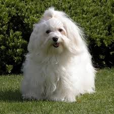 |
small, sturdy, and highly affectionate "velcro dogs" known for their cheerful, intelligent, and social nature. |
| Saint Bernard | 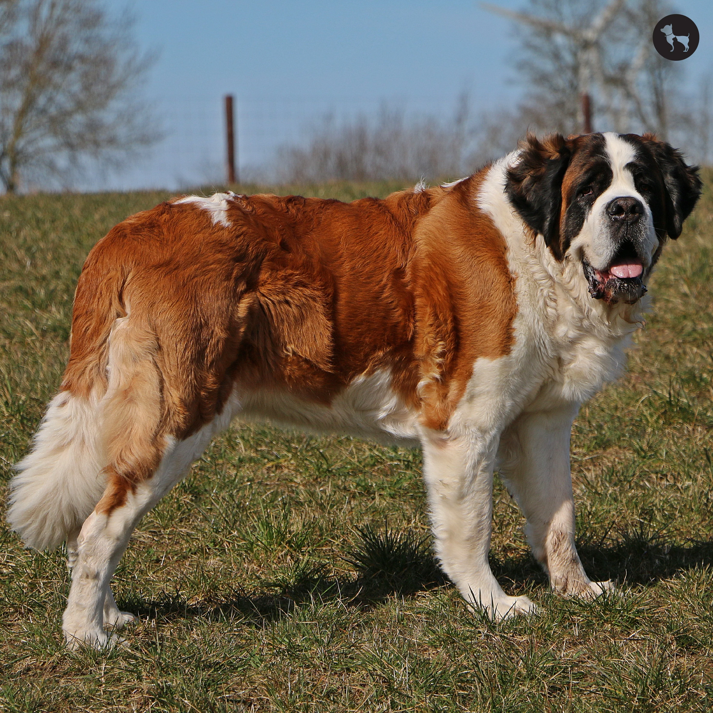 |
Famous rescue dogs from the Alps; they love cold weather and kids. |
| Belgian Shepherd | 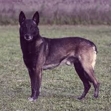 |
highly intelligent, energetic, and loyal working dogs. |
| Newfoundland | 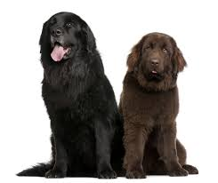 |
Expert swimmers with webbed feet; known as "nanny dogs." |
| Boston Terrier | 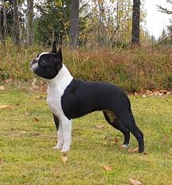 |
affectionate, intelligent, and lively small dogs known for their distinctive tuxedo-like coats, friendly temperament, and brachycephalic (short-nosed) features. |
| Cairn Terrier/b> | 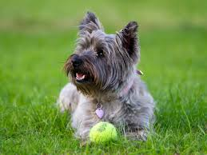 |
a wire-haired coat, a tendency to dig and bark, high energy levels, and a strong prey. |
| Brittany | 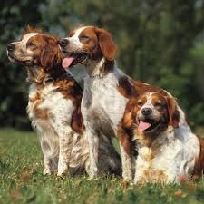 |
energetic, intelligent, and affectionate sporting dog known for being a versatile hunting partner and a friendly family companion. |
| Sheltie | 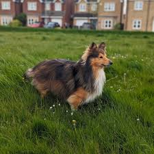 |
small, highly intelligent, and intensely loyal herding dogs known for their vocal nature, high trainability, and long, dense double coats. |
| Black Russian Terrier | 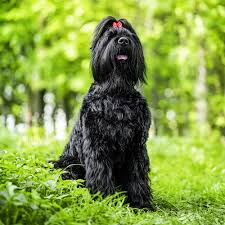 |
highly trainable, needing firm leadership, consistent training, and substantial mental stimulation to avoid destructive behavior. |
| Bull Mastiff | 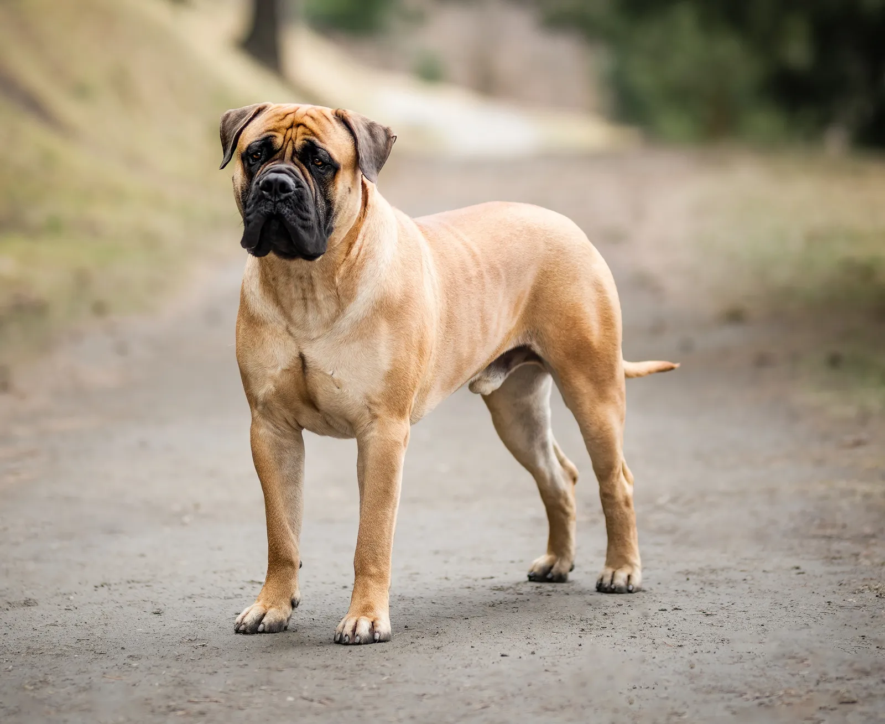 |
independent thinkers, prone to drooling, and require early, consistent training to manage their stubbornness and protective instincts. |
| Bedlington Terrier | 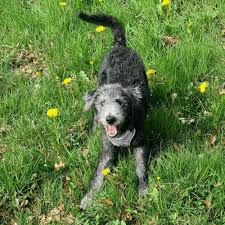 |
affectionate, intelligent, and energetic companions with a, [hypoallergenic, non-shedding curly coat |
| Doberman | 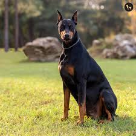 |
affectionate "velcro dogs" that bond deeply with owners, requiring consistent training, early socialization, and high physical/mental exercise. |
| Cane Corso | 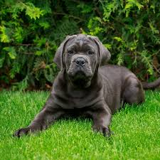 |
deeply affectionate with their family but assertive, dominant, and wary of strangers, requiring firm training and early socialization. |
| American Pitt Bull | 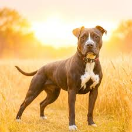 |
they are confident, courageous, and often, quite stubborn. |
Owning a giant breed is rewarding, but remember: everything is more expensive. This includes food, larger beds, and higher vet costs for medications.
With a 150-pound dog, leash training is essential! You want to make sure you are walking the dog, and not the other way around.